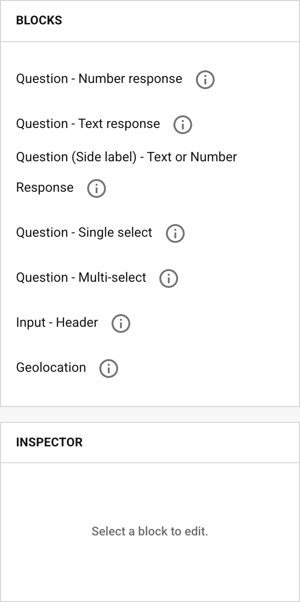
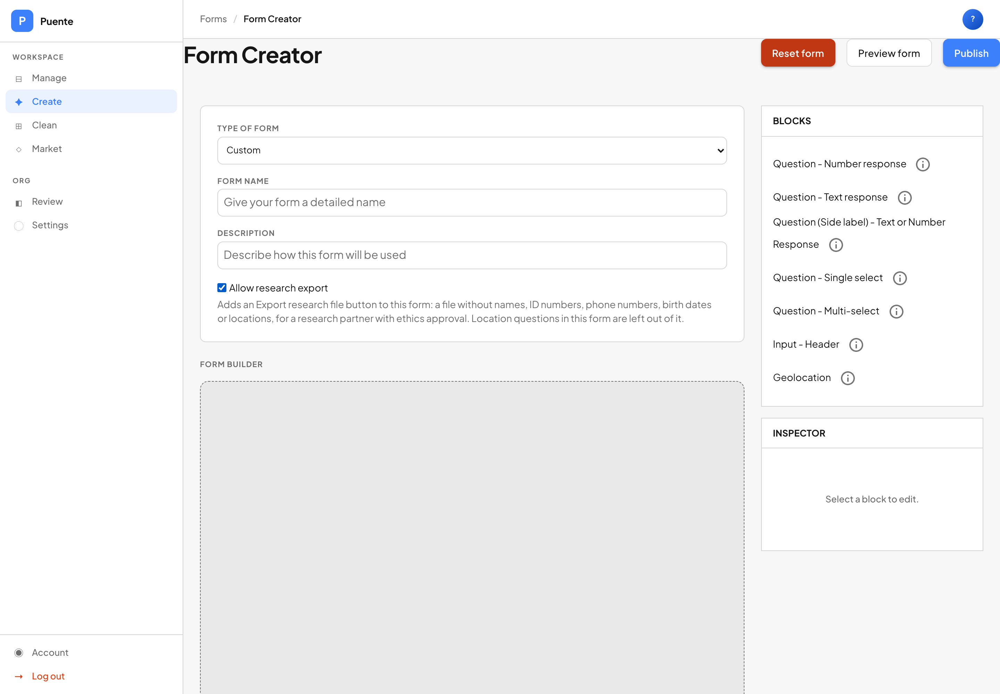

1The form is the spreadsheetEl formulario es la hoja de cálculo
By the end of this guide you canAl terminar esta guía podrás
- turn a list of columns from the researchers into a form;convertir la lista de columnas de los investigadores en un formulario;
- choose the right kind of question for each answer;elegir el tipo de pregunta correcto para cada respuesta;
- turn on the research file for the form;activar el archivo de investigación para el formulario;
- test the whole thing before a single real patient is seen.probarlo todo antes de atender a un solo paciente real.
When you build a form in Manage, you are really designing a spreadsheet. Each question becomes one column. Each time someone fills in the form, that becomes one row. The words you type as the question become the column heading (Building a form that exports cleanly).
Cuando creas un formulario en Manage, en realidad estás diseñando una hoja de cálculo. Cada pregunta se vuelve una columna. Cada vez que alguien llena el formulario, eso se vuelve una fila. Las palabras que escribes como pregunta se vuelven el título de la columna (Crear un formulario que se exporte bien).
| In the formEn el formulario | In the research fileEn el archivo de investigación |
|---|---|
| a question: Acuity, right eye, without glassesuna pregunta: Agudeza, ojo derecho, sin lentes | a column with that headinguna columna con ese título |
| one patient's visit, filled inla visita de un paciente, llenada | one rowuna fila |
| the answer they chose: 20/200la respuesta elegida: 20/200 | the value in that cellel valor en esa celda |
So build the form from the spreadsheet the researchers need, not the other way round.
Así que crea el formulario a partir de la hoja de cálculo que necesitan los investigadores, no al revés.
2Start from the columnsEmpieza por las columnas
Ask the research team for the list of columns they need, in writing. For a vision study it might look like this:
Pide por escrito al equipo de investigación la lista de columnas que necesitan. Para un estudio de la vista podría ser así:
- consent;consentimiento;
- vision in each eye before glasses;visión de cada ojo antes de los lentes;
- the prescription that was measured;la graduación que se midió;
- the prescription of the glasses given;la graduación de los lentes entregados;
- vision in each eye with the glasses.visión de cada ojo con los lentes.
Some things you do not need to ask. Age, sex and community already live on the patient's record, and the research file brings them in for you.
Algunas cosas no hace falta preguntarlas. La edad, el sexo y la comunidad ya están en el registro del paciente, y el archivo de investigación las incluye por ti.
3One form per visitUn formulario por visita
Put everything measured at one visit into one form: the test before, what was given, the test after. Then each row of the file is one complete visit.
Pon todo lo que se mide en una visita en un solo formulario: la prueba antes, lo que se entregó, la prueba después. Así cada fila del archivo es una visita completa.
If you split a visit across two forms, someone later has to match a row in one file to a row in another, and every mismatch is a patient lost from the study.
Si divides una visita en dos formularios, alguien después tiene que emparejar una fila de un archivo con una de otro, y cada error es un paciente perdido para el estudio.
4Pick from a list; don't typeElige de una lista; no escribas
Manage offers seven kinds of question. Two matter most for research:
Manage ofrece siete tipos de pregunta. Para investigación importan sobre todo dos:

| UseUsa | ForPara | ExampleEjemplo |
|---|---|---|
| Question - Single selectPregunta: selección única | anything with standard valuestodo lo que tenga valores estándar | a vision line (20/40), a lens power (−2.25), yes or nouna línea de visión (20/40), una graduación (−2.25), sí o no |
| Question - Number responsePregunta: respuesta numérica | true measurements with no fixed listmedidas reales sin lista fija | a lens axis between 0 and 180el eje de un lente entre 0 y 180 |
Why it matters: on a busy day, a typed number can lose its minus sign or its decimal point, and nothing in the file shows that it happened.
Por qué importa: en un día con mucho trabajo, un número escrito puede perder el signo menos o el punto decimal, y nada en el archivo muestra que pasó.
5Community from a listLa comunidad, de una lista
The community on a patient's record is typed by hand, so the same place ends up spelled many ways: El Río, El Rio, el rio . To a spreadsheet those are three different places.
La comunidad en el registro del paciente se escribe a mano, así que el mismo lugar termina escrito de muchas maneras: El Río, El Rio, el rio . Para una hoja de cálculo son tres lugares distintos.
If the study groups patients by community, add a single-select question listing the communities the clinic serves, spelled once, the way you want them, plus “Other”.
Si el estudio agrupa a los pacientes por comunidad, agrega una pregunta de selección única con las comunidades que atiende la clínica, escritas una vez como quieres, más «Otra».
6Ask for consent firstPide primero el consentimiento
Make the first question a single select: has the patient agreed to their data being used for this study? Copy the wording from the ethics approval word for word. Don't shorten it or improve it.
Haz que la primera pregunta sea de selección única: ¿el paciente aceptó que sus datos se usen en este estudio? Copia el texto de la aprobación ética palabra por palabra. No lo acortes ni lo mejores.
The research file contains every time the form was filled in, including patients who said no. Those rows are removed before the file is sent; Sharing data with researchers shows how.
El archivo de investigación contiene todas las veces que se llenó el formulario, incluidos los pacientes que dijeron que no. Esas filas se quitan antes de enviar el archivo; Compartir datos con investigadores explica cómo.
7Nothing that identifies anyoneNada que identifique a nadie
Don't ask for names, phone numbers or ID numbers inside the form. They are already on the patient's record, and the research file is built to leave the record's copies out. A question that asks for one would put it straight back in.
No pidas nombres, teléfonos ni números de cédula dentro del formulario. Ya están en el registro del paciente, y el archivo de investigación está hecho para dejar fuera esas copias. Una pregunta que los pida los volvería a meter.
A Geolocation question is the one exception: the research file leaves it out on its own, because a location is a home.
Una pregunta de Geolocalización es la única excepción: el archivo de investigación la deja fuera por sí solo, porque una ubicación es una casa.
8Turn on the research fileActiva el archivo de investigación
Every form starts with the research file turned off. Someone has to decide, on purpose, that this form's answers may leave Puente.
Todo formulario empieza con el archivo de investigación desactivado. Alguien tiene que decidir, a propósito, que las respuestas de este formulario pueden salir de Puente.
- In Manage, open Form Creator, or open your form with Edit.En Manage, abre el Creador de formularios, o abre tu formulario con Editar.
- Under the name and description, tick Allow research export. Read the sentence below it.Debajo del nombre y la descripción, marca Permitir exportación para investigación. Lee la frase de abajo.
- Press Publish.Pulsa Publicar.


9Test it with a copyPruébalo con una copia
Test the form before the clinic, but not on the real form. Test patients sent to the real form would end up in the real research file. Use a copy instead.
Prueba el formulario antes de la clínica, pero no en el formulario real. Los pacientes de prueba enviados al formulario real terminarían en el archivo de investigación real. Usa una copia.
- In Form Manager, press Duplicate on the form.En el Gestor de formularios, pulsa Duplicar en el formulario.
- Start the name with
PRUEBA -so nobody mistakes it for the real one, and publish.Empieza el nombre conPRUEBA -para que nadie lo confunda con el real, y publica. - On a phone, fill in the copy for two or three invented patients, and sync.En un teléfono, llena la copia para dos o tres pacientes inventados, y sincroniza.
- Press Export research file on the copy. Open the file and read every column heading.Pulsa Exportar archivo de investigación en la copia. Abre el archivo y lee cada título de columna.
- Send that test file to the research team and ask them to confirm it has what they need.Envía ese archivo de prueba al equipo de investigación y pídeles que confirmen que tiene lo que necesitan.
- When they say yes, delete the copy.Cuando digan que sí, elimina la copia.

10Rules of thumbReglas prácticas
- Build the form from the spreadsheet the researchers need.Crea el formulario a partir de la hoja de cálculo que necesitan los investigadores.
- If the answer comes from a list, make it a list.Si la respuesta viene de una lista, hazla una lista.
- Consent first, in the approved words.Primero el consentimiento, con las palabras aprobadas.
- Never ask for a name inside the form.Nunca pidas un nombre dentro del formulario.
- Test on a copy, never on the real form.Prueba en una copia, nunca en el formulario real.
Check yourselfComprueba lo que aprendiste
A researcher asks for “age”. Do you add an age question?Un investigador pide «edad». ¿Agregas una pregunta de edad?
No. Age comes from the patient's record, and the research file includes it for you.
No. La edad viene del registro del paciente, y el archivo de investigación la incluye por ti.
Should the lens power be a Number response?¿La graduación debe ser una Respuesta numérica?
No. Lens powers come in fixed steps, so a single-select list makes typos impossible.
No. Las graduaciones vienen en pasos fijos, así que una lista de selección única hace imposibles los errores al escribir.
Where do you try out the form before the clinic?¿Dónde pruebas el formulario antes de la clínica?
On a duplicate whose name starts with PRUEBA, which you delete afterwards.
En un duplicado cuyo nombre empieza con PRUEBA, que eliminas después.